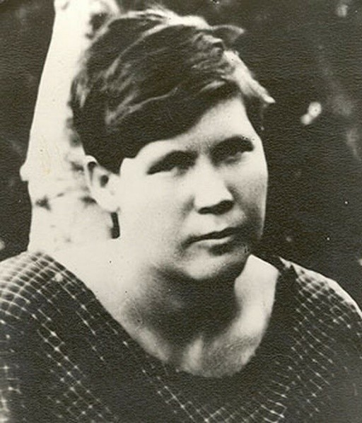

24-27 августа 1942 года
Источник: Областные вести №48 от 22.08.2013.
Воспоминания жителей города. Из воспоминаний Александра Филипповича Подгорнова. Он работал токарем на тракторном заводе, вытачивал детали для танков.
«Для заводчан битва за город началась 23 августа, когда немцы прорвались к тракторному. Надрывной заводской гул вымел всех из цехов. Из рабочих быстро собрали отряд, вооружили и поставили на рубеж у тракторозаводского поселка. Мы держали оборону до подхода 282 -го полка дивизии НКВД. Меня и многих добровольцев тут же зачислили в ее состав, сначала был в роте автоматчиков, потом назначили командиром отделения взвода разведки». 10-я стрелковая дивизия НКВД первой встретила немцев на подступах к городу. Как писал Василий Иванович Чуйков: «Ее воинам пришлось быть первыми защитниками Сталинграда, и он с честью выдержали это труднейшее испытание, мужественно и самоотверженно сражались с превосходящими силами врага до подхода частей и соединений 62-й Армии».
24 августа было совершено 24 налета с интервалом в 4-8 мин. 25 августа – 3 массированных налета. К 27 августа почти полностью были уничтожены заводы им. Ильича, им. Куйбышева, № 490 и 3, хлебозаводы № 5 и 6, почтамт, телефонная станция. С 22 августа по 14 сентября на город было сброшено 50 тысяч фугасных бомб весом от 50 кг до 1 тонны и десятки тысяч зажигательных бомб. В конце августа - начале сентября 1942 года советское командование располагало в районе города не более 100 исправными истребителями в сутки, тогда как противник имел 390-400 самолетов. Количественное превосходство авиации противника при малочисленности нашей зенитной артиллерии и истребительной авиации стало губительным для Сталинграда. Методично разрушая город с помощью авиации, немецкое командование пыталось сломить сопротивление советских войск и подорвать моральное состояние его жителей. В результате варварских бомбардировок в Сталинграде погибло 42797 человек. Цифра не окончательная. До настоящего времени не удается восстановить список погибших…
Было разрушено и сожжено 50 тысяч зданий и 56 предприятий. После окончание битвы осталось полуразрушенного жилья 175 тысяч кв. м или 9.5 процентов. Повсюду зияли воронки от бомб и снарядов, возвышались изрешеченные остовы жилых домов…
Подвиг

23 августа 1942 года Ольга Ковалева в последний раз встала к станку – после бомбардировки погасли мартены.
Спешно собирались рабочие – бойцы истребительного батальона, получившие приказ срочно явиться в штаб. На проходной завод они получали винтовки. И тут к ним подошла Ковалева и попросила выдать ей оружие. И снова, как когда-то, услышала: война, мол, дело мужское. «Сталь с вами умела варить, сумею и воевать», – ответила Ольга.
Обстановку сообщили кратко: враг рвется к тракторному, надо встать на его пути. На площади у тракторного завода рабочие получили пулеметы и ящики с боеприпасами. Ольга сняла косынку с головы, набрала в нее патронов, да так и принесла их на передний край.
Оборону заняли на крутом берегу Мечетки. Готовились к бою токари, сталевары, кузнецы, слесари, котельщики. Одеты все по-рабочему в промасленные спецовки, рубашки, свитера…
Вскоре поступил приказ – выбить немцев из маленького хутора за Мечеткой. Послышались выстрелы наших танков. Это был сигнал к наступлению, и ополченцы бросились в атаку.
Как описать, что творилось дальше? Свистят пули, рядом, совсем рядом, падают на землю товарищи, и никто не знает, сумеет ли он добежать до окопа или упадет следующим…
И все же ополченцы шли вперед, оставляя позади гитлеровские траншеи, в панике покинутые фашистами. Сколько земли наши бойцы отвоевали в тот день? Двести метров, может быть, триста.
И на земле этой лежали погибшие герои – ополченцы. Первые потери наших истребительных батальонов. Ольга Ковалева лежала, раскинув руки, косынка слетела с головы, ветер растрепал волосы, рядом – винтовка.
Пуля сразила ее в голову.